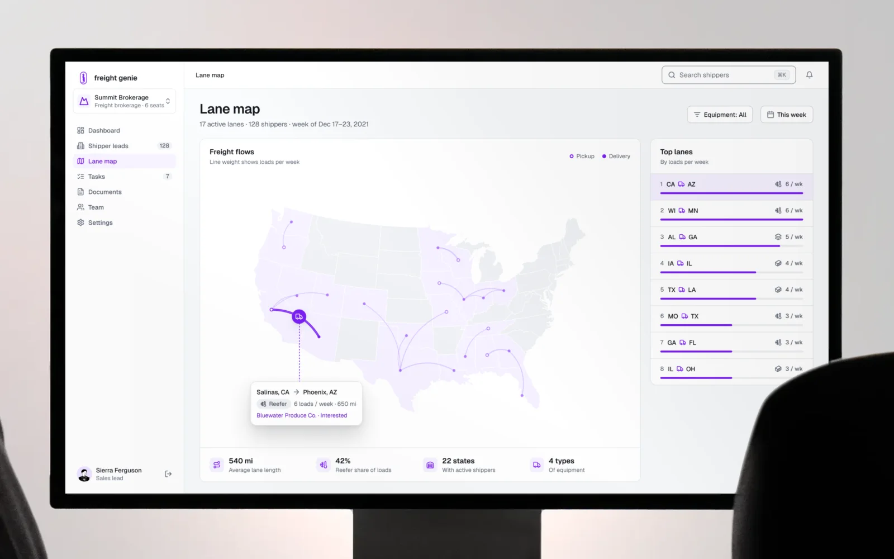
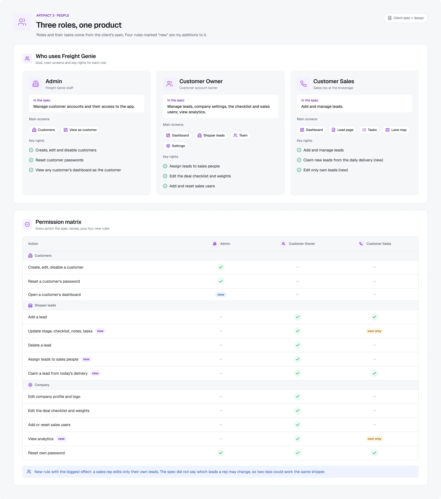
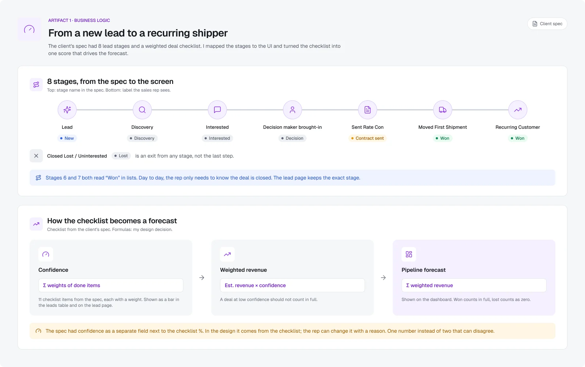
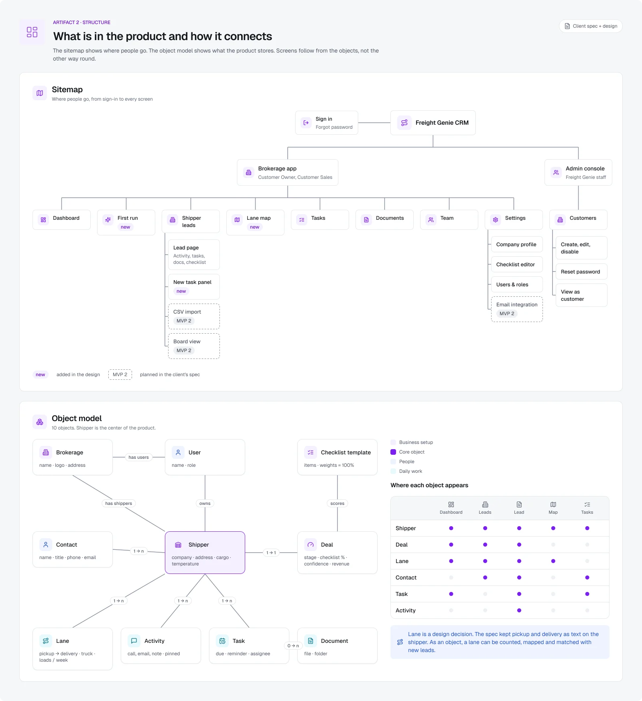
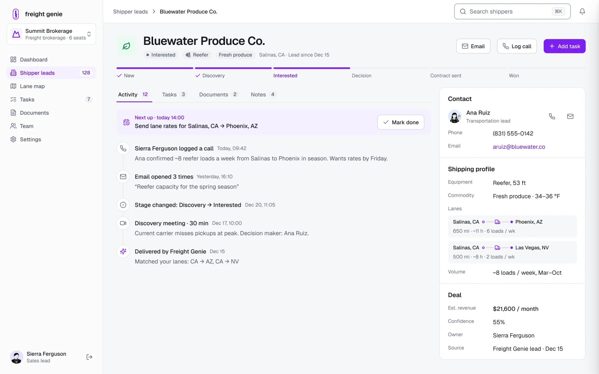
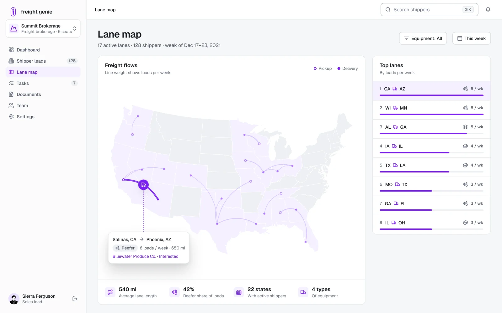
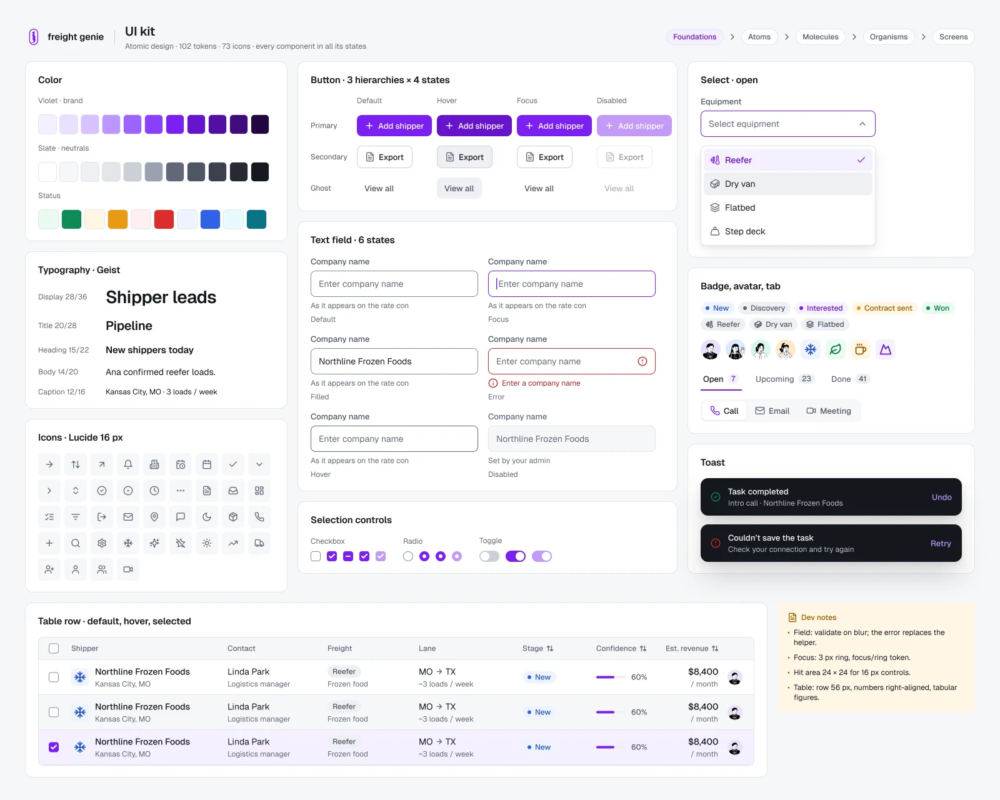
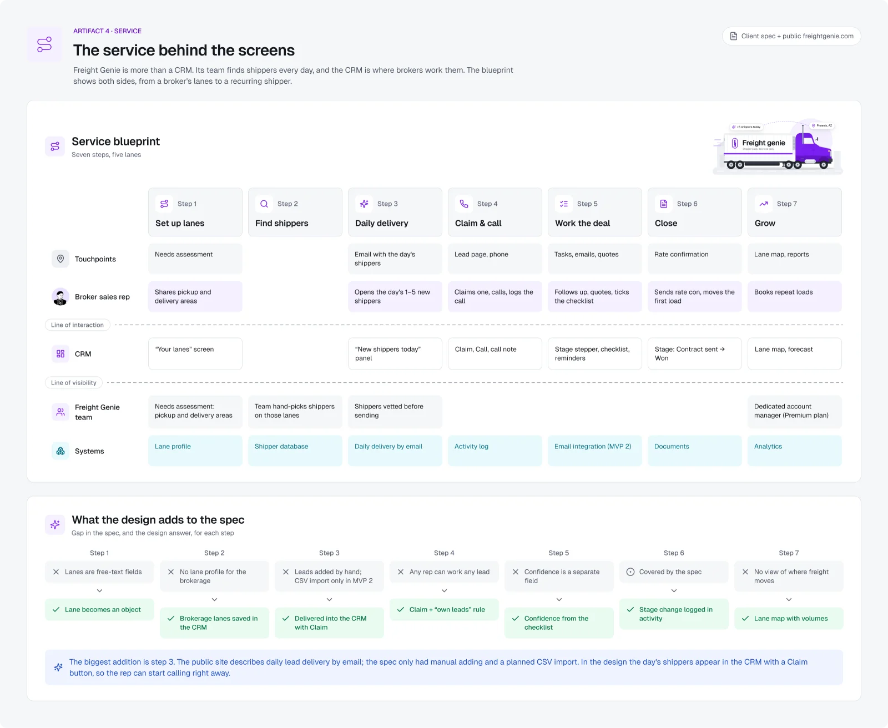

Freight Genie — a sales CRM for freight companies.Freight Genie — CRM для продажів у вантажоперевезеннях.
A multi-role SaaS CRM where freight brokers move shippers from a first call to a recurring customer. Three user roles, a lead pipeline, tasks and permissions, designed solo from the client’s written spec. A fixed-price Upwork project with a five-star review.Багаторольова SaaS CRM, у якій фрейт-брокери ведуть вантажовідправника від першого дзвінка до постійного клієнта. Три ролі користувачів, воронка лідів, задачі й права доступу — я спроєктував усе сам за письмовою специфікацією клієнта. Upwork-проєкт з фіксованою ціною і п’ятизірковим відгуком.

The business problem: a sales process that lived in people’s heads.Бізнес-проблема: процес продажів, який жив у головах людей.
The client was building a product for freight companies. Their sales people win shippers through a long chain of calls, quotes and first shipments. Without a system, nobody could see which leads were moving and which had gone quiet.Клієнт створював продукт для вантажних компаній. Їхні продавці здобувають вантажовідправників через довгий ланцюжок дзвінків, комерційних пропозицій і перших відправлень. Без системи ніхто не бачив, які ліди рухаються, а які завмерли.
The client came with a written specification for an MVP and a fixed budget. My job was to turn that specification into a complete, buildable design — without the scope growing along the way.Клієнт прийшов із письмовою специфікацією MVP і фіксованим бюджетом. Моє завдання — перетворити цю специфікацію на повний дизайн, готовий до розробки, і не дати обсягу розростися дорогою.
Three roles, three views of the same data.Три ролі — три погляди на ті самі дані.
- AdminAdminThe product’s own staff: manages customer companies and can see their dashboards.Власна команда продукту: керує компаніями-клієнтами й бачить їхні дашборди.
- Customer OwnerCustomer OwnerRuns a freight company’s account: leads, company settings, sales users and analytics.Веде акаунт вантажної компанії: ліди, налаштування компанії, продавців та аналітику.
- Customer SalesCustomer SalesAdds leads and works them, day by day.Додає ліди й щодня працює з ними.
I started from this permission map and not from screens. For every role I wrote down what they must see, what they may change and where they enter the product. The screens followed from that.Я почав із цієї карти прав доступу, а не з екранів. Для кожної ролі я записав, що вона має бачити, що може змінювати і де входить у продукт. Екрани випливли з цього.

The logic before the screens.Логіка перед екранами.
The spec named eight lead stages and a deal checklist with weights. I mapped the stages to the labels a sales rep sees. I also made the checklist the source of the confidence score, so the forecast comes from one number and not from two that can disagree.Специфікація називала вісім етапів ліда й чек-лист угоди з вагами. Я зіставив етапи з підписами, які бачить продавець. А ще зробив чек-лист джерелом показника confidence, тож прогноз спирається на одне число, а не на два, що можуть суперечити одне одному.

Then the structure: where people go and what the product stores. The shipper is the center, and a lane became its own object, so lanes can be counted and shown on a map.Далі структура: куди йдуть люди і що зберігає продукт. У центрі — вантажовідправник, а маршрут став окремим об’єктом, тож маршрути можна рахувати й показувати на карті.

How I worked inside a fixed price.Як я працював у межах фіксованої ціни.
- Specification to flowsВід специфікації до флоуI turned the client’s document into a mind map of flows before opening Figma.Я перетворив документ клієнта на ментальну карту флоу, перш ніж відкрити Figma.
- A board with a done stateДошка зі станом «готово»Every screen was a card on a board with a clear done state.Кожен екран був карткою на дошці з чітким станом «готово».
- States, not only screensСтани, а не лише екраниEmpty states were designed together with the main flow, so developers did not have to invent them.Порожні стани я проєктував разом з основним флоу, щоб розробникам не довелося їх вигадувати.
What I designed.Що я спроєктував.







Also in scope: documents in folders, team management, a settings screen for roles and permissions, and sign-in and sign-up flows. Company names, people and numbers on the screens are sample data.Також в обсязі: документи в теках, керування командою, екран налаштувань ролей і прав, флоу входу й реєстрації. Назви компаній, люди й числа на екранах — демо-дані.
Motion, specified.Анімації зі специфікацією.
Three interactions carry state: the bulk action bar, the side panel and the toast. Each one runs 200–240 ms with an ease-out curve. With reduced motion turned on, they cross-fade and do not move.Три взаємодії передають стан: панель масових дій, бічна панель і сповіщення. Кожна триває 200–240 мс із кривою ease-out. Якщо ввімкнено зменшення руху, вони плавно проявляються й не рухаються.
A UI kit built in layers.UI kit, збудований шарами.
The kit follows atomic design: tokens and icons first, then atoms, molecules and organisms. Every component has its states — default, hover, focus, error, disabled — and notes for developers on behavior.Набір побудовано за атомарним підходом: спершу токени й іконки, потім атоми, молекули й організми. Кожен компонент має стани — звичайний, наведення, фокус, помилка, вимкнений — і нотатки для розробників про поведінку.

The service behind the screens.Сервіс за екранами.
Freight Genie is more than a CRM: its team hand-picks shipper leads for each brokerage every day. I mapped the service from the client’s spec and the public site, to see where the CRM has to pick up the work.Freight Genie — це більше, ніж CRM: його команда щодня вручну добирає ліди-вантажовідправників для кожної брокерської компанії. Я описав сервіс за специфікацією клієнта й публічним сайтом, щоб побачити, де CRM має підхопити роботу.

Outcome.Результат.
The client closed the contract with a five-star review — my first on the platform. The full scope was delivered within the agreed price.Клієнт закрив контракт із п’ятизірковим відгуком — моїм першим на платформі. Повний обсяг я виконав у межах погодженої ціни.
What I carry into multi-role products today.Що я переношу в багаторольові продукти сьогодні.
- Permissions firstСпершу права доступуIn a multi-role product, the permission map is the real information architecture. Draw it before any screen.У багаторольовому продукті карта прав доступу і є справжньою інформаційною архітектурою. Намалюй її до будь-якого екрана.
- A pipeline is a state machineВоронка — це скінченний автоматEvery screen in a CRM is a place where a status changes. Designing the statuses first makes the screens obvious.Кожен екран CRM — це місце, де змінюється статус. Якщо спершу спроєктувати статуси, екрани стають очевидними.
- Fixed price needs a visible scopeФіксованій ціні потрібен видимий обсягA board with a done state protects both sides better than any contract clause.Дошка зі станом «готово» захищає обидві сторони краще за будь-який пункт контракту.
If you liked this, also see…
Have a SaaS CRMSaaS CRM to design?
Drop a brief — roles, stage, timeline. I usually reply within a working day.